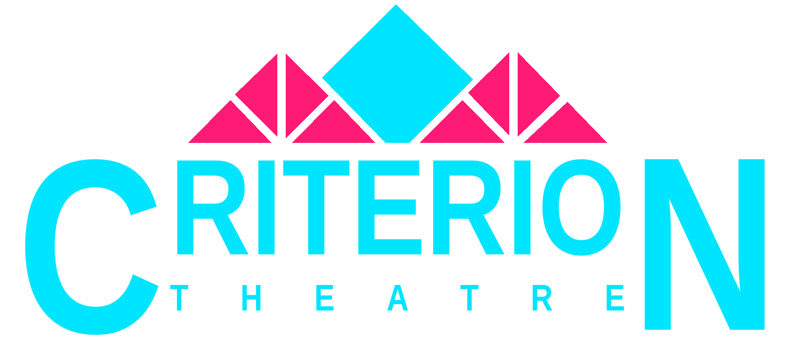
Tonight at the Criterion
BY BEN ELTON
Sat 27 Jun / Sat 4 Jul 2026
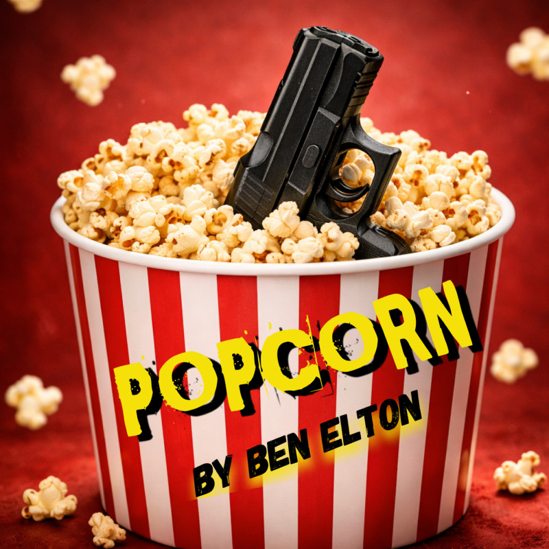
download-assets.py
Tonight's production
A play by Ben Elton — directed by Dean Sheridan
Running time approximately 2 hours 10 minutes including one 20-minute interval. Curtain at 19:30.
House opens 19:00 • Curtain 19:30 • Interval ~20:30
Tonight's cast
Content Notice
Full Content Advisory
This production contains the following. Please speak to a member of front-of-house if you have any concerns.
Strong language. Frequent throughout, including offensive slurs and sexual terms.
Simulated violence. Hostage-taking, physical threats, and guns used to intimidate people.
Loud gunshot effects. Sudden loud noises (gunshot effects) during Act II.
Mature themes. Adult themes around media violence, celebrity culture, and the sexualisation of crime.
Flashing lights. Camera flashes and rapid light changes in the Oscar / TV scenes.
Age guidance. Recommended for ages 15 and above.
Before curtain
Please silence your phones completely — vibrate is loud on stage. Photography and recording are not permitted during the performance.
Fire exits are clearly marked. In an emergency, follow the staff and leave by the nearest exit.
About the writer
Stand-up comedian, novelist, screenwriter. Co-creator of The Young Ones and Blackadder; writer of Popcorn as a novel in 1996 and as the stage play that has toured since 2000. The play won the Olivier Award for Best New Comedy.
Born 3 May 1959 • Fitzrovia, London
About the play
Hollywood film director Bruce Delamitri's Oscar-night triumph is cut short when two violent intruders — fans who claim his movies inspired their crimes — invade his home. A sharp, darkly comic thriller about a culture addicted to spectacle and violence.
From the director
"Ben Elton asked in 1996 who's to blame when our culture feeds on violence. Thirty years and a billion screens later, the question hasn't aged — it's multiplied. That's why we're staging Popcorn now."
Dean Sheridan • Director
Did you know
The Academy Awards have been broadcast on television every year since 1953. The first ceremony, in 1929, lasted just 15 minutes. The winners had been announced in the newspapers three months earlier — so it was less a competition than a victory dinner.
Did you know
The Criterion has staged over 450 productions since 1955. Two of them were world premieres. Members have played more than 6,000 parts and crewed 8,000 backstage roles. The building you're standing in is over 140 years old — an 1884 Methodist chapel that became a theatre in 1960.
200 Company members • 400 supporting members • 0 paid employees
Coming up next at the Criterion
The Other Other Bronte
Charlotte Brontë has a confession about how one sister became an idol, and the other became known as the third sister. You know the one. No, not that one. The other, other one… Anne. Sarah Gordon's irreverent retelling of the Brontë legend.
Sat 26 Sep / Sat 3 Oct 2026 / Book at criteriontheatre.co.uk/tickets
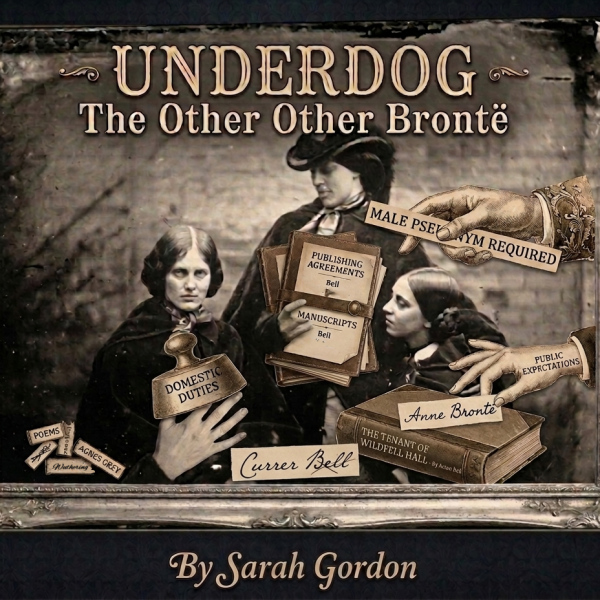
And then this Christmas
Based on the Academy Award-winning film. William Shakespeare hasn't written a hit in years — until he hears his lines spoken with great feeling by an unknown young actor. A romantic comedy about the discovery of his muse, and the writing of Romeo and Juliet.
By Marc Norman & Tom Stoppard, adapted by Lee Hall. Directed by Hugh Sorrill.
Sat 5 Dec / Sat 12 Dec 2026
Join us
The Criterion is run entirely by volunteers — actors, technicians, front-of-house, builders, painters. If you'd like to be part of it, speak to any of the front-of-house team tonight, or visit criteriontheatre.co.uk/join.
Registered charity 1161430
Tickets & walk-ins
Tonight's house is available unless otherwise announced. Walk-ins welcome at the box office. Book online: criteriontheatre.co.uk/tickets.
At the bar tonight
Beers, wines, soft drinks and snacks available now in the foyer bar. Please return to your seats when the bell sounds.
[ PLACEHOLDER ] featured-drink slide to be supplied by bar team
Coming next
The Other Other Bronte
Sarah Gordon's irreverent retelling of the Brontë sisters — sibling rivalry, the power of words, and the third sister you don't know about. You know the one. No, not that one.
Sat 26 Sep / Sat 3 Oct 2026
This Christmas
Based on the Academy Award-winning film
Will Shakespeare hasn't written a hit in years — until an unknown young actor speaks his lines with great feeling. The romantic comedy behind Romeo and Juliet, adapted by Lee Hall.
Sat 5 Dec / Sat 12 Dec 2026
Thank you for being with us
The bar remains open until 23:00. Stay a while — have a drink, talk it over, say hello to the cast.
Tonight • 23:00 close
From everyone at the Criterion
For supporting amateur theatre in Coventry. For making the journey to Earlsdon. For sitting in the dark with us. We hope to see you again soon.
From the Criterion archive
"Assisting Jeff Hadley with the set construction. In those days, money was tight and materials short, so there was a lot of what we now know as recycling. All nails were recovered and straightened, screws were few and far between, and the wooden beer crates were repurposed for all manner of uses on stage."
Karl Stafford — Set construction
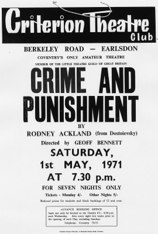
From the Criterion archive
"I played Guy Burgess in the first of the two plays, and Elliot Relton-Williams was my Russian boyfriend, Tolya. On the opening night there was a severe snowstorm; Elliot had been having a quick ciggie outside the back door of the theatre wearing his heavy Russian overcoat and fur hat, and made his first entrance into my Moscow flat covered in real snow!"
Phil Reynolds — Cast
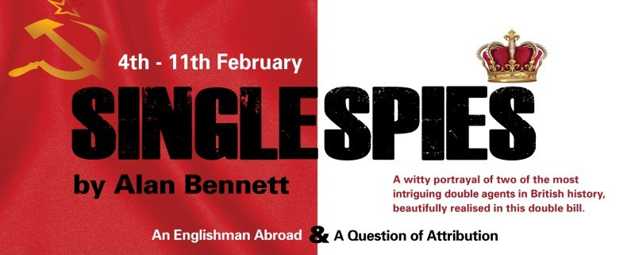
From the Criterion archive
"Mr. Ruscoe decided to put ice water in the bottle he squirted down my trousers during the fight on the last night of the run. I had my revenge for the final scene of the play. John had to play it completely immobilised in a hospital bed — about ten seconds before he jumped in, I emptied a bottle of ice water onto the mattress."
Terry Nicholls — Cast
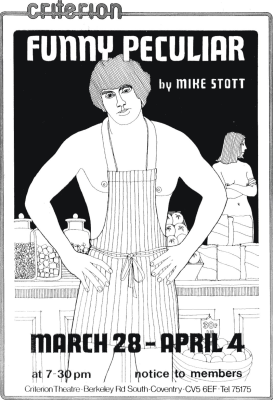
From the Criterion archive
"The wonderful Doug Griffiths had to recite a list of countries every night… never quite got them in the same order or indeed the same list. Brings a smile to my face remembering this one."
Nicole Firth — Cast
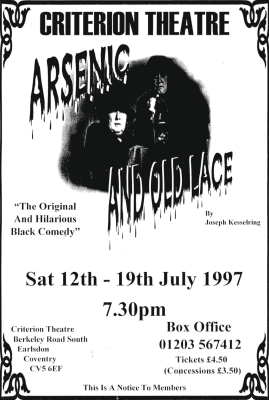
From the Criterion archive
"My first time in a production at the Criterion. At the end of the final dress rehearsal, I had bundled up my costume and stored it under a table. Linda Holmes, doing wardrobe, was not very happy with this. 'Who do you think is going to be ironing this costume?' At the time I thought there was an ironing fairy. My mum, as it turned out."
Chris Firth — Cast
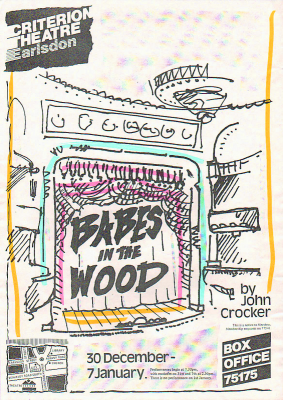
From the Criterion archive
"My father played Sky Masterson. One night, a ring box was needed for the proposal scene. 'I have a ring box,' I enthusiastically chirped from the back of the rehearsal. 'A ring box?' — disbelievingly from the stage. 'Yes, an old-fashioned one with a catch and everything.' So my ring box took a central part in the proposal. Ring boxes, I am sure, were not in short supply in Coventry."
Marcus Pugh — Aged 11 at the time
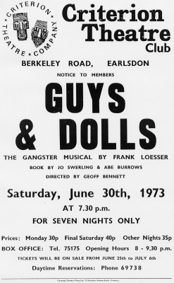
A Bruce Delamitri picture
The Oscar-winning film at the heart of tonight's story. Bruce Delamitri's blood-soaked portrait of small-town America — and the movie two killers swear taught them everything.
"Some people call it violence. He calls it truth."
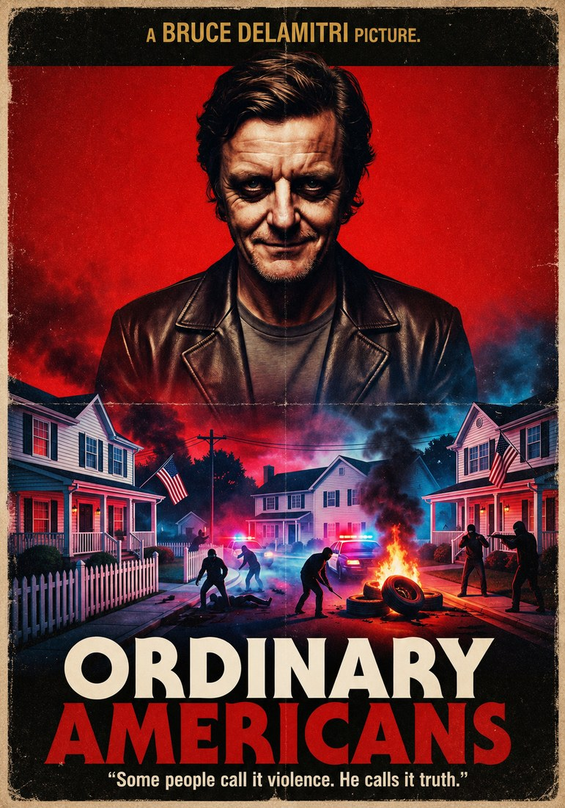
Cover story
Hollywood's most dangerous director, in his own words. The magazine profile behind Bruce Delamitri's most explosive masterpiece — too slick, too violent, too honest?
World-building from tonight's production
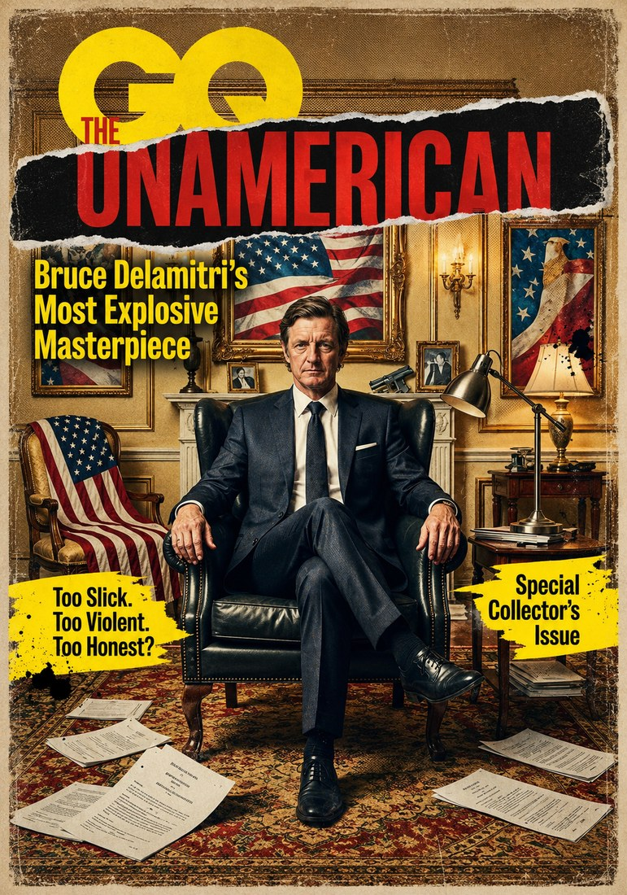
Tonight's headlines
The killing spree America couldn't stop watching. Wayne and Scout — celebrity outlaws in a culture addicted to the spectacle — claim Bruce Delamitri's films wrote their script.
World-building from tonight's production
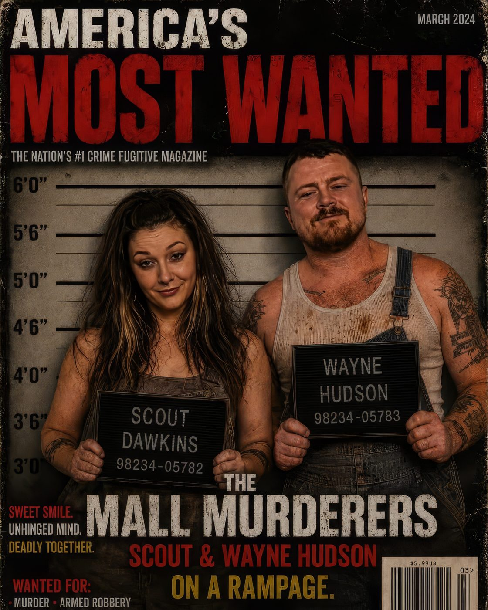
Celebrity spotlight
Model, actress, and the face on every newsstand. Brooke Daniels wants to be taken seriously in a town that only takes pictures — and tonight, on Oscar night, she's about to land the role of her life.
World-building from tonight's production
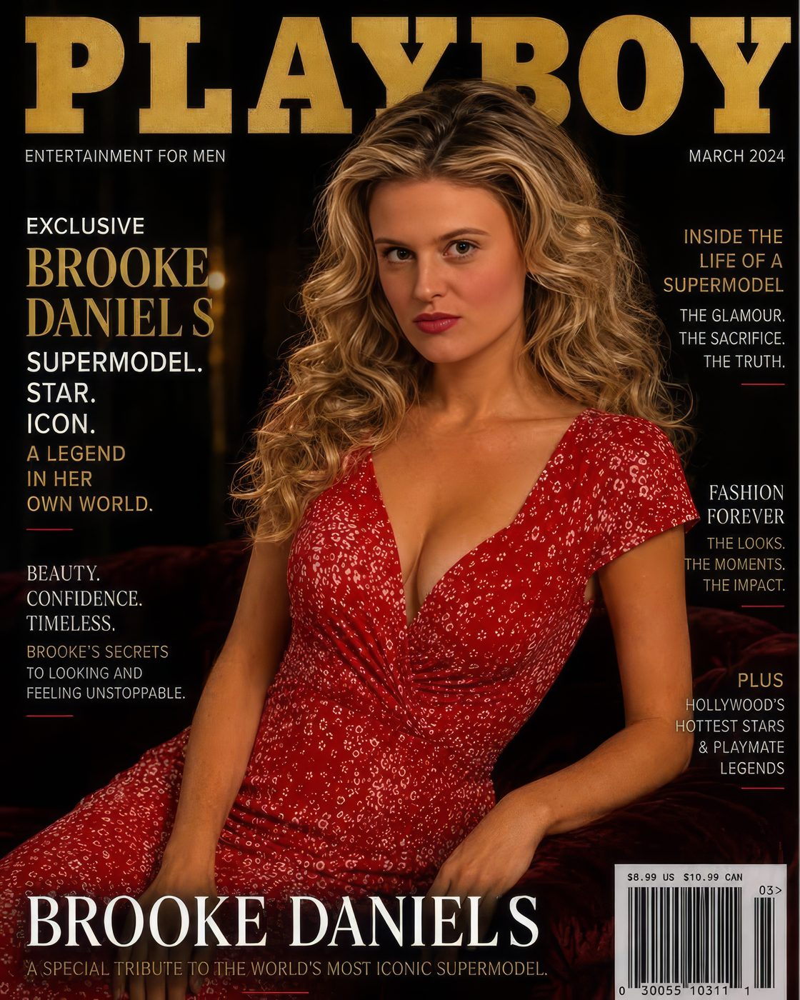
From the wings
[ VIDEO SLOT ] — Chris's behind-the-scenes videos play full-frame here without the Neon Noir overlay applied, per the architecture spec. Awaiting file list from Chris.
Weighted 2× in postshow pool
Book your next visit
The Other Other Bronte — by Sarah Gordon
An irreverent retelling of the life and legend of the Brontë sisters — sibling power dynamics, the power of words.
Sat 26 Sep / Sat 3 Oct 2026 / criteriontheatre.co.uk/tickets
[ QR CODE ] to be added
Christmas at the Criterion
Marc Norman & Tom Stoppard — adapted by Lee Hall
"A cracking love letter to theatre itself that strikes gold in its stage version." WhatsOnStage
Sat 5 Dec / Sat 12 Dec 2026 / Directed by Hugh Sorrill
SLIDES — click any to jump
Preview legend. PLACEHOLDER content awaiting confirmation from the production team (see 04-popcorn-content-plan.md §8 for the full list). tbc content warnings whose inclusion depends on Dean / Olivia's specific staging choices.
Phase preview. Switch between Preshow / Interval / Postshow at the top to see how the Neon Noir palette shifts. Preshow leans magenta + warm yellow accents; Interval shifts cyan-dominant (cooler, "off-air"); Postshow dims the neon and brings cream-on-black forward for reflective archive content.
Not a runtime stand-in. This file is a static preview for aesthetic review. The actual obs-helper engine consumes the JSON files in shows/popcorn-2026/foyer-pack/ (architecture doc §7) and renders inside an OBS Browser Source. The bag-refill shuffle, HOUSE-OPEN one-shot logic, and dwell randomisation all happen there, not here.